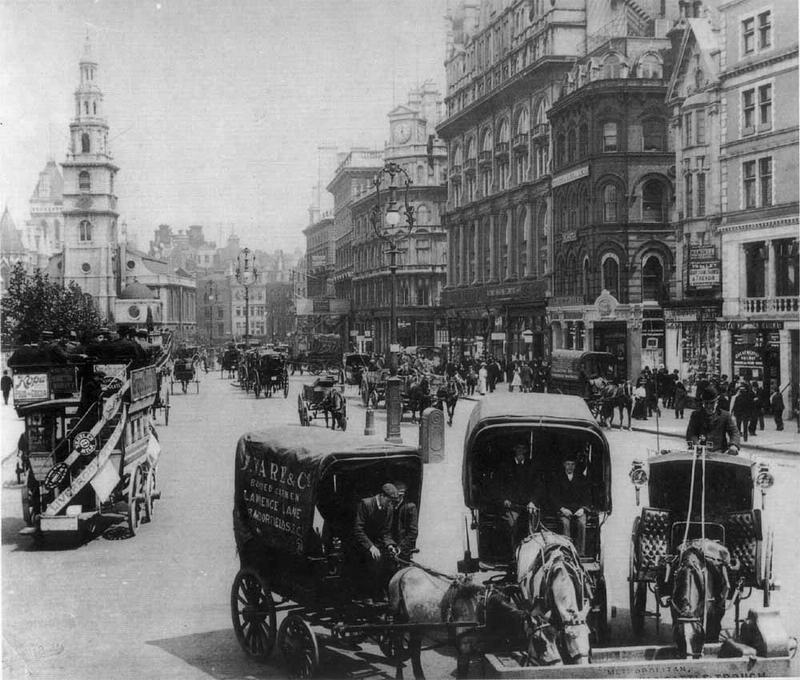
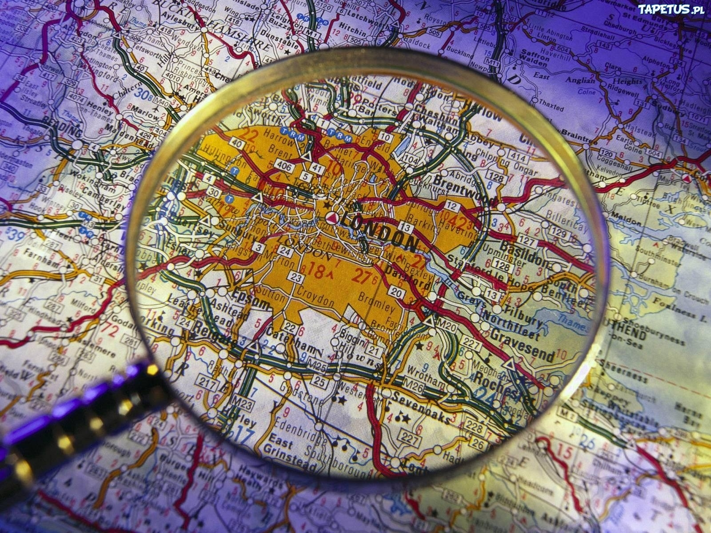
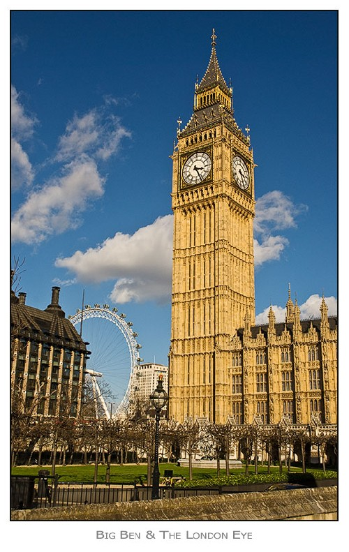
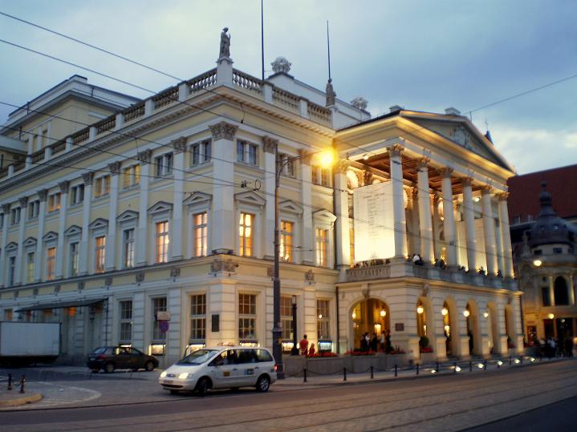
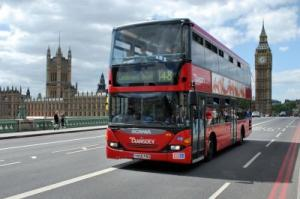

Londyn to stolica Anglii i Wielkiej Brytanii. Leży w południowo-wschodniej części kraju. Jest największym miastem Unii Europejskiej i jednym z największych miast świata. Mieszka w nim 8,4 mln osób na powierzchni 1572 km2. Jest podzielony na 32 gminy.
Historia miasta  Pierwotnie na tym terenie była osada rzymska. Dzięki handlowi z krajami Europy stał się najbogatszym miastem Imperium. W VII wieku stał się stolicą królestwa Essexu. W 1665 roku w Londynie panowała epidemia dżumy, a rok później w pożarze spłonęła duża część miasta. Został odbudowany przez Christophera Wrena. W XIX wieku otworzono tam pierwszą linię kolei podziemnej. W 1908 roku Londyn był gospodarzem Igrzysk Olimpijskich. W czasie II wojny światowej miasto zostało częściowo zniszczone przez bombardowania. W tej chwili największym problemem Londynu jest smog. Do góryWarunki geograficzne w mieście  Przez miasto przepływa Tamiza, która pierwotnie była pięc razy szersza. W związku z tym istniało duże ryzyko powodzi, jednak problem ten rozwiązano budując tamę. W Londynie klimat jest umiarkowany morski. Najcieplejszym miesiącem jest lipiec ze średnią temperaturą do 23 st. C, a najzimniejszym styczeń, jednak temperatura nie spada tam poniżej zera. Rzadko pada śnieg, opady deszczu są z kolei częste. Najbardziej deszczowym miesiącem jest październik, a najmniej - luty. Do góryZabytki  Tower of London - budowla pełniąca niegdyś funkcje obronne, jak i pałacowe. Budynek był także więzieniem, miejscem egzekucji, mennicą, arsenałem i skarbcem. Ostatnim władcą Anglii który wykorzystywał ją w celach obronnych był Jakub I (1566-1625). Tower of London założona została przez Wilhelma Zdobywcę w roku 1078 by dziś stać się jednym z popularniejszych fortów świata. Obecnie ulokowane są tu klejnoty koronne o bezcennej wartości.
Do góry Atrakcje
W Londynie można odwiedzić:
 Transport  Londyn jest wielkim węzłem komunikacji drogowej, krzyżuje się tam dziewięć autostrad oraz pięć innych ważnych dróg krajowych. Wszystkie połączone są z autostradą M25, która tworzy pierścień wokół miasta. Przewozy pasażerskie wewnątrz aglomeracji odbywają się płynnie dzięki systemowi metra, będącemu najstarszym na świecie, o łącznej długości wszystkich linii 392 km. Brzegi Tamizy spięte są 28 mostami drogowymi i kolejowymi oraz trzema tunelami pod jej korytem. Londyn jest największym międzynarodowym węzłem transportu lotniczego. Do góry Ceny W Anglii obowiązują funty.
Do góry |
{kind=link}
{kind=link}
{kind=link}